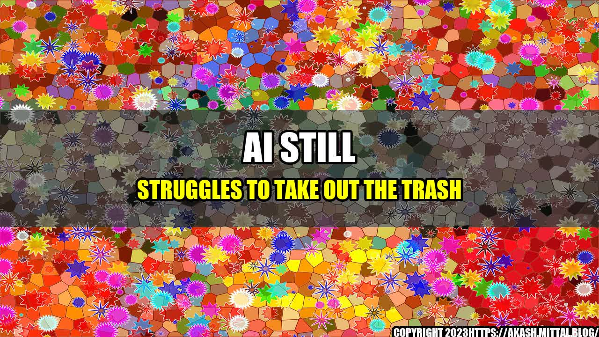

AI Still Struggles to Take Out the Trash

It's a common trope in science fiction movies and TV shows: robots and AI systems taking care of all the household chores so that humans can focus on more important things. However, in reality, artificial intelligence still has a long way to go in terms of automating even the simplest of tasks, like taking out the trash.
The Story of the Smart Trash Can
Several years ago, a tech startup called GeniCan launched a product called the "smart trash can." The idea was simple: the trash can would have a built-in barcode scanner and voice recognition software, allowing users to easily scan items as they threw them away and automatically add them to their shopping list. Sounds convenient, right?
However, the product didn't exactly take off. Reviews were mixed, with some users reporting that the barcode scanner didn't work properly and others complaining that the voice recognition software couldn't understand them. Plus, the trash can was pretty expensive compared to a regular one.
While the smart trash can is an example of AI being used to automate a household task, it shows that we still have a long way to go in terms of making these systems reliable, user-friendly, and cost-effective.
Here are some other examples that demonstrate the limitations of AI when it comes to household tasks:
- The Roomba robot vacuum cleaner is one of the most well-known examples of an AI-powered appliance. While it does a decent job of cleaning floors, it can still get stuck in corners or under furniture, and it often misses spots that need extra attention.
- AI-powered laundry machines are becoming more common, but they still struggle with certain fabrics and stains. Plus, they can be quite expensive compared to traditional machines.
- Smart home systems that control everything from the thermostat to the lighting to the security cameras are becoming more sophisticated, but they still require a fair amount of manual setup and tweaking. Plus, they can be vulnerable to hacking and other security issues.
The
Despite all the hype and excitement around AI and automation, it's important to remember that these systems are still far from perfect. While they can certainly make our lives easier in many ways, they often come with their own set of problems and limitations.
- AI and automation have the potential to revolutionize household tasks, but we're not there yet.
- Current AI-powered appliances and systems often suffer from reliability, usability, and cost issues.
- As we continue to develop and improve these technologies, it's important that we keep these limitations in mind and prioritize creating systems that are reliable, user-friendly, and affordable.
and Case Studies
One of the best ways to illustrate the limitations of AI in household tasks is to share personal anecdotes and case studies. For example:
- A friend of mine recently purchased a smart thermostat and spent hours trying to get it to work properly with their HVAC system. Eventually, they had to call in a professional to install it.
- A small business owner I know tried to implement a chatbot on their website to handle customer service inquiries. However, the chatbot ended up providing inaccurate or unhelpful responses and caused more headaches than it solved.
- Another friend purchased a smart refrigerator with a built-in touchscreen and apps for tracking groceries and creating shopping lists. However, the apps were unreliable and the touchscreen was prone to glitches.
These anecdotes demonstrate that even seemingly simple AI-powered tasks can be fraught with issues and frustrations.
Practical Tips
If you're considering purchasing an AI-powered appliance or system for your home, here are some practical tips to keep in mind:
- Do your research and read reviews carefully before making a purchase.
- Be prepared for some trial-and-error when setting up and using the system.
- Consider the cost and whether the benefits outweigh the drawbacks.
- Remember that AI and automation are not magic solutions that will make all your household tasks disappear overnight.
References and Hashtags
Here are some relevant URLs and hashtags to explore:
Curated by Team Akash.Mittal.Blog
Share on Twitter Share on LinkedIn